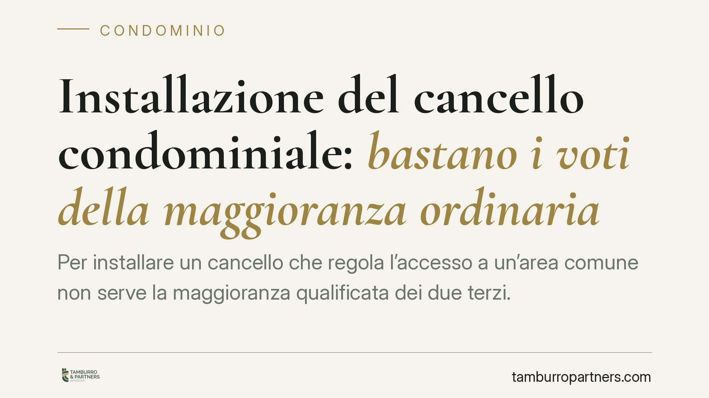

Installazione del cancello condominiale: bastano i voti della maggioranza ordinaria
Per installare un cancello che regola l'accesso a un'area comune non serve la maggioranza qualificata dei due terzi. La Cassazione conferma che si tratta di un intervento di ordinaria gestione, non di un'innovazione ai sensi dell'art. 1120 c.c. Basta dunque la maggioranza ordinaria prevista per le delibere assembleari. Un principio che semplifica la vita ai condomìni.

Il caso e il principio affermato
La questione ricorrente in assemblea è la seguente: per installare un cancello che chiude l'ingresso al cortile o all'area di sosta comune, quale maggioranza occorre?
La Corte di Cassazione ha ribadito un orientamento consolidato. L'installazione di un cancello che si limita a regolare l'accesso a un bene comune non costituisce innovazione ai sensi dell'art. 1120 del codice civile. Di conseguenza, non è necessaria la maggioranza qualificata dei due terzi del valore dell'edificio, ma è sufficiente la maggioranza ordinaria richiesta per le normali delibere assembleari.
Inquadramento normativo
Occorre distinguere due categorie di interventi, che il codice civile tratta in modo diverso.
Le innovazioni (art. 1120 c.c.) sono modifiche che alterano l'entità materiale della cosa comune o ne mutano la destinazione d'uso. Per approvarle serve la maggioranza rafforzata indicata dall'art. 1136, quinto comma, c.c.: il voto favorevole della maggioranza degli intervenuti che rappresenti almeno i due terzi del valore dell'edificio.
Diverso è l'uso della cosa comune (art. 1102 c.c.): ciascun condomino può servirsi del bene comune purché non ne alteri la destinazione e non impedisca agli altri di farne pari uso. In questa cornice rientrano gli interventi che disciplinano le modalità di godimento senza incidere sulla struttura o sulla funzione del bene.
Secondo la Cassazione, il cancello che chiude un varco già esistente e ne regola l'apertura appartiene a questa seconda categoria. Non trasforma l'area, non ne cambia la destinazione, non impedisce l'accesso ai condomini: si limita a governarne le modalità. Per questo la delibera segue le maggioranze ordinarie previste dall'art. 1136 c.c., e non quelle aggravate dell'art. 1120.
Utile ricordare che l'art. 1139 c.c. rinvia, per quanto non previsto in materia di comunione condominiale, alle norme sulla comunione in generale.
Cosa cambia in concreto
La qualificazione dell'intervento non è un tecnicismo. Da essa dipende la validità stessa della delibera.
Se l'assemblea approva l'installazione del cancello con le sole maggioranze ordinarie, ritenendola correttamente un atto di regolamentazione dell'uso, la decisione è legittima. Se invece il singolo intervento presenta caratteristiche tali da configurare un'innovazione — ad esempio perché comporta opere strutturali rilevanti o limita l'uso di alcuni condomini — la stessa delibera adottata senza i due terzi sarebbe impugnabile.
Il confine, dunque, va verificato caso per caso. Il criterio guida resta quello dell'incidenza sulla destinazione e sulla funzione del bene comune: un cancello che regola l'accesso resta nell'alveo dell'art. 1102; un intervento che modifica sostanzialmente l'area o la sottrae all'uso comune ricade nell'art. 1120.
Attenzione anche a un profilo pratico: la posa di un cancello incide sulle modalità di accesso di tutti. Se comporta il rilascio di chiavi o telecomandi, l'assemblea dovrebbe disciplinarne fin da subito la distribuzione e i costi, per prevenire contenziosi tra condomini.
Cosa fare in concreto
- Qualificate correttamente l'intervento: prima di convocare l'assemblea, valutate se il cancello si limita a regolare l'accesso o se comporta opere che ne alterano la destinazione. Da questo dipende la maggioranza necessaria.
- Redigete un ordine del giorno chiaro: indicate con precisione l'oggetto della delibera, le caratteristiche del manufatto e il preventivo di spesa, per evitare impugnazioni per genericità.
- Verbalizzate le maggioranze raggiunte: annotate teste presenti e millesimi votanti, così da documentare il rispetto dei quorum previsti dall'art. 1136 c.c.
- Disciplinate l'uso del cancello: prevedete nella delibera le modalità di apertura, la consegna di chiavi o dispositivi e la ripartizione dei costi di gestione e manutenzione.
- Conservate la documentazione tecnica: preventivi, capitolato e schede del manufatto sono utili in caso di contestazioni sulla natura dell'intervento.
In presenza di dubbi sulla qualificazione dell'opera, consigliamo di richiedere una valutazione preventiva prima della delibera: un errore sulla maggioranza espone la decisione al rischio di annullamento.
---
*Contributo informativo a cura di Tamburro & Partners - Avv. Giuseppe Tamburro. Non costituisce parere legale.*
Ogni condominio ha una storia a sé.
Se gestisci un'amministrazione e vuoi un confronto su una specifica questione condominiale, scrivi allo studio. Ti rispondiamo entro un giorno lavorativo.